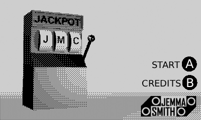
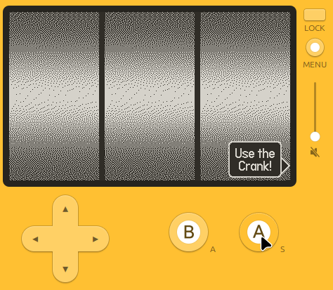
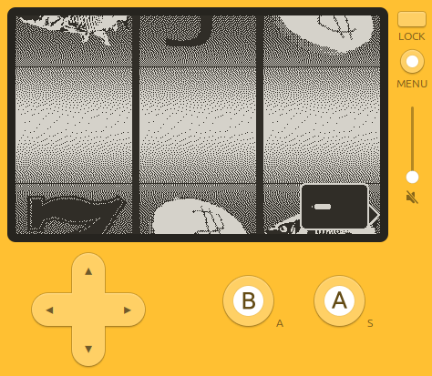
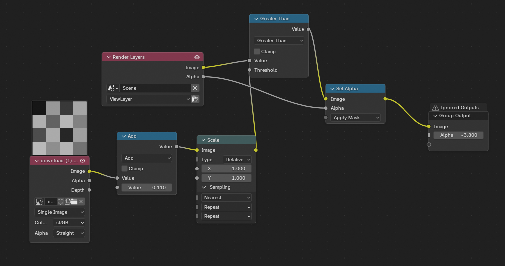

Over the past few days I worked on a project as part of a game jam that my uni was holding that was open to alumni.
The theme of this game jam was “Jackpot” and being a fan of pinball one of my first ideas was to make a pinball game. For this theoretical game I imagined that you would take the roll of a wizard named jack and players have to collect ingredients for a potion. After completing a small goal to find an ingredient, you would have to lock the ball in the cauldron (or pot), doing this three times would start multi-ball. During multi-ball specific shots would be lit for a jackpot. The idea was ambitious, yes but I also believe that a pinball table would make for a prime idea for a solo/ small team protect as only a few models are used, with a focus on programming over art, but still allows for team size to be scaled during the projects needs.
I wanted to make this project in Unreal Engine 5 as I don’t have any UE5 projects in my portfolio, despite have experience with it. I started by creating some blueprints for the ball and table, this was easy as they are simply physics objects. After modelling a flipper using the built in modelling mode I tried programming the flipper…. This is when I started having issues. As I’m still very new to UE5 and I’ve not had to make new blueprint that reads controller inputs. I spent 3 hours figuring this out. And once I had finally gotten the flippers to work the physics where not behaving as intended. I had anticipated physics issues due to the high speeds of a pinball and the flippers, which would cause problems regarding collision interpretation. In addition to this, the ball lost momentum when it shouldn’t, the ball bounce was wrong, and the friction with the table was completely wrong. I wonder if these issues were caused by the scale: I had modelled everything to be correctly scaled to real life pinball, as I assumed this would create the most accurate experience, perhaps scaling the project up would allow me to more accurately dial in the game feel.
 By this time day 1 of the jam was coming to an end, and I decided that I wouldn’t be able to fix the physics in time AND make the rest of the game on top of it. I would like to start this project again some time when I have a deeper understanding of UE5 physics. I still believe that making a pinball game would work well as a game jam project, perhaps I should spend some time in the future developing the components, a pinball platform. That way I could quickly sketch up a new pinball design.
By this time day 1 of the jam was coming to an end, and I decided that I wouldn’t be able to fix the physics in time AND make the rest of the game on top of it. I would like to start this project again some time when I have a deeper understanding of UE5 physics. I still believe that making a pinball game would work well as a game jam project, perhaps I should spend some time in the future developing the components, a pinball platform. That way I could quickly sketch up a new pinball design.
My back up plan had been to make a slot machine simulator for the Playdate Console, using the crank to pull the lever. This project was attractive to me as by this point in the game jam I only had 2 days left so a project that required minimal art assets at a low resolution and fidelity was ideal for my skill set. This project also allowed me to learn more about developing for the Playdate as I want to gain more expedience with it before working on my Playdate horror Game.

As the Playdate doesn’t use a game engine my first step was to set up a “game mode scene” system in which each frame the game queries itself to determine the game mode, and performs the corresponding update function, I’m aware this is horrible in terms of performance, I felt it was excusable for such a small project. The next major issue was getting sprites to work, I had previously been drawing images to screen each frame, so the use of sprites was new to me, however I found it was surprisingly simple, as I’m able to move it by specified move amounts and did not need to calculate its new position manually. Changing the image on the sprite and enabling/disabling the sprite was also pleasantly easy and most of the project is one set of sprites being disabled while another set get enabled. StartSpin function that disables each of the 3 sprites and invokes 3 functions with a slight delay between them, each of these functions “stops” one of these wheels, by enabling the relative sprite and setting its image to one from an image array as chosen by a random number generator.

The rest of the project was just expanding functionality, adding the sprites above and below the primary sprites, spinning spear sprites, and the menus. One of my favourite additions is the “bounce back” effect I made for the wheel stopping. Upon a wheel stopping the sprite is drawn 6 pixels below the final position, 0.3 of a second later and the sprites are moved to their final position. This creates the implied follow through movement of the fast spinning wheels with out the need to program any real spinning.
This is screen capture of the final gameplay.
One of the most important lessons I’ve learned in doing this game jam was the refining of a 3D render to dithered sprite pipeline.
My previous workflow required me to render out a frame in blender, save the frame as an image, then import this image to Photoshop, apply the dither effect, clean up the alpha channel (if needed), then exporting the final image.
This workflow had several drawbacks:
- The multi-step nature meant that making any more than one sprite was tedious
- Revision of the 3D render would require back and forth between programs
- Saving and re-saving files was tedious and required clean up after the process was complete
- The dithering sensitivity in Photoshop is fixed, requiring unneeded iterations to produce one sprite
As part of the project I have several jackpot animations, with as many as 50 frames, while not a lot it showed the weaknesses in this workflow.
I found a YouTube Video that instructed how to make a dithering effect for blender using blenders compositing nodes. This fixes all issues with the issues with the previous workflow. Now I can refine the image and see the dithered effect in editor, change the dithering sensitivity, and I can just render out an animation and the dithering effect will automatically be applied.

This is by far the most important thing I’ve worked on in this project and will be used extensible in my horror game I want to work on in the future.
In conclusion I’m not supper happy with the project its self, but I am happy with the stepping stones I’ve laid for the Playdate horror game. I hope to participate in future game jams.
Special thanks to Link Barbour for assisting in creating the win screens.
Powered by w3.css